PEM electrolyser with Gas Supply
Generated from runProtonicCell.m
Model coupling
We couple the gas supply layer with the anode of the proton membrane. The coupling occurs at the interface of the two regions. Along the anode, we assume a constant voltage, that is, we neglect the potential loss in this part.
The chemical reaction at the interface is
It relates the mass fluxes in the gas supply layer and inside the anode in the following way
Here, \(n\) denotes the normal at the interface (same orientation in the whole expression), so that, for example, \(j_\ce{H2O}\cdot n\) denotes the mass of \(\ce{H2O}\) leaving the gas layer in \(kg/m^2/s\) (for a 3D model). For the gas layer, the fluxes are given by the sum of the convection and diffusion fluxes, so that, for \(\ce{H2O}\), we have
and a similar expression for the flux of \(\ce{O2}\) at the interface.
json input data
We load the input data that is given by json structures. The physical properties of the supply gas layer is given in the json file gas-supply-whole-cell.json
clear jsonstruct_material
filename = 'ProtonicMembrane/jsonfiles/gas-supply-whole-cell.json';
jsonstruct_material.GasSupply = parseBattmoJson(filename);
filename = 'ProtonicMembrane/jsonfiles/protonicMembrane.json';
jsonstruct_material.Electrolyser = parseBattmoJson(filename);
jsonstruct_material = removeJsonStructFields(jsonstruct_material, ...
{'Electrolyser', 'Electrolyte', 'Nx'}, ...
{'Electrolyser', 'Electrolyte', 'xlength'});
The geometrical property of the cell is given in 2d-cell-geometry.json
filename = 'ProtonicMembrane/jsonfiles/2d-cell-geometry.json';
jsonstruct_geometry = parseBattmoJson(filename);
The initial state is given in gas-supply-initialization.json
filename = 'ProtonicMembrane/jsonfiles/gas-supply-initialization.json';
jsonstruct_initialization.GasSupply = parseBattmoJson(filename);
The time stepping parameters are given in cell-timestepping.json
filename = 'ProtonicMembrane/jsonfiles/cell-timestepping.json';
jsonstruct_timestepping = parseBattmoJson(filename);
We merge all the json struct we have created to obtain a complete json structure that can be use to setup the model
jsonstruct = mergeJsonStructs({jsonstruct_material , ...
jsonstruct_geometry , ...
jsonstruct_initialization, ...
jsonstruct_timestepping});
We change the value of the current density to the value we want to use in this simulation
jsonstruct.Electrolyser.Control.currentDensity = 0.1*ampere/((centi*meter)^2);
Input parameter setup
We setup the input parameter structure which will we be used to instantiate the model
inputparams = ProtonicMembraneCellInputParams(jsonstruct);
We setup the grid, by calling the function setupProtonicMembraneGasLayerGrid
[inputparams, gen] = setupProtonicMembraneCellGrid(inputparams, jsonstruct);
Model setup
We setup the model for the full cell (electrolyser and a gas supply layer).
model = ProtonicMembraneCell(inputparams);
The model is equipped for simulation using the following command (this step may become unnecessary in future versions)
model = model.setupForSimulation();
Grid plots
We plot the different regions with their grids.
To resolve the non-linearity in the electrolyte, we need a very fine mesh. Plotting the full mesh including the edges for this domain will hide its structure. Therefore we set the option edgecolor to none.
figure('position', [337, 757, 3068, 557])
hold on
plotGrid(model.grid, 'edgecolor', 'none')
plotGrid(model.Electrolyser.grid, 'facecolor', 'red', 'edgecolor', 'none')
plotGrid(model.GasSupply.grid, 'facecolor', 0.9*[0 1 1], 'edgealpha', 0.2)
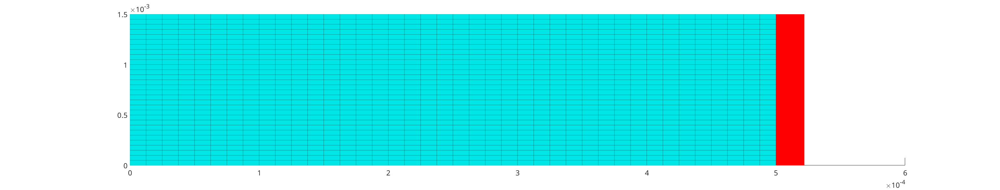
We plot the boundary and interface faces
s = spring(10);
opts = {'linewidth', 10, ...
'edgecolor', s(8, :)};
we plot the inlet faces
figure('position', [337, 757, 3068, 557])
plotGrid(model.Electrolyser.grid, 'facecolor', 'red', 'edgecolor', 'none')
plotGrid(model.GasSupply.grid, 'facecolor', 'none', 'edgealpha', 0.2)
plotFaces(model.GasSupply.grid, model.GasSupply.couplingTerms{1}.couplingfaces, opts{:});
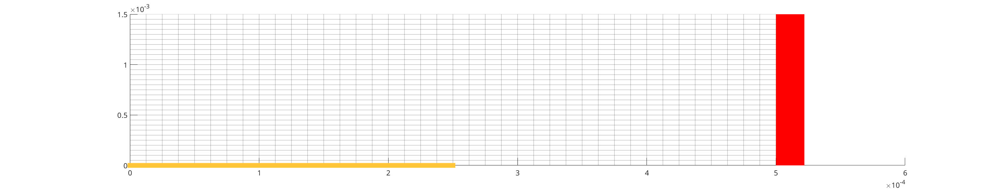
we add the outlet faces
plotFaces(model.GasSupply.grid, model.GasSupply.couplingTerms{2}.couplingfaces, opts{:});
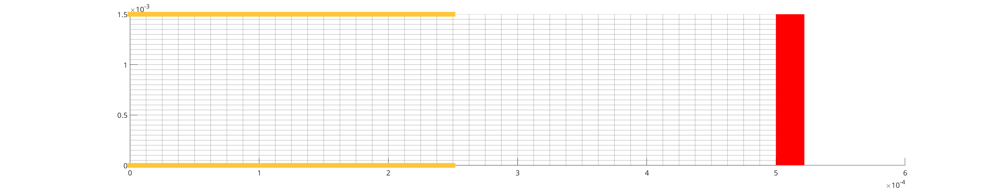
we add the interface faces
plotFaces(model.GasSupply.grid, model.couplingTerm.couplingfaces(:, 1) , opts{:});
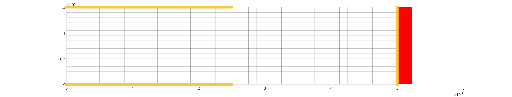
Setup initial state
The initial state for the cell is used using the initial state of the gas layer that have been loaded (see here)
initstate = model.setupInitialState(jsonstruct);
Setup schedule
We setup the time stepping. We are computing the steady state solution, using the the time evolution equation. Note that we also use a numerical method which gradually introduces the high nonlinearities inherent to the problem (in particular the exponential dependence of the electronic conductivity in the membrane). Therefore, the intermediate solutions (i.e. those computed before the final step) should be considered with care.
schedule = model.setupSchedule(jsonstruct);
Setup nonlinear solver
We use an adaptive time stepping. In this case, the solver will try to keep the number of timesteps equal to 5, based on the timestepping history.
ts = IterationCountTimeStepSelector('targetIterationCount', 5);
nls = NonLinearSolver();
nls.timeStepSelector = ts;
nls.maxIterations = 15;
Start simulation
We start the simulation
[~, states, report] = simulateScheduleAD(initstate, model, schedule, 'OutputMinisteps', true, 'NonLinearSolver', nls);
plotting setup
close all
set(0, 'defaultlinelinewidth', 3);
set(0, 'defaultaxesfontsize', 15);
set(0, 'defaultfigureposition', [1290, 755, 1275, 559])
elyser = 'Electrolyser';
elyte = 'Electrolyte';
gs = 'GasSupply';
state = states{end};
state = model.addVariables(state);
Electrolyte results
We plot the electrostatic potential \(\phi\) (we need to remove the plotting of the grid edges, otherwise due to the grid refinement, they will hide completely the color of the field)
figure
plotCellData(model.(elyser).(elyte).grid, state.(elyser).(elyte).phi, 'edgecolor', 'none');
title('Electrostatic Potential \phi / V')
colorbar
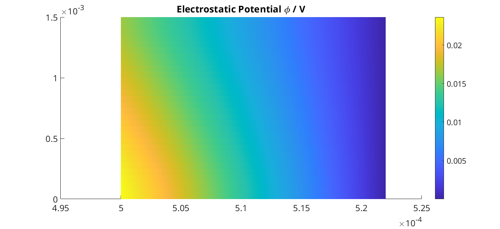
We want also to plot the result as a surface plot. Then, we need to manipulate the output and make it suitable to the surf function of matlab (we do not explain those details here)
N = gen.nxElectrolyser;
xc = model.(elyser).(elyte).grid.cells.centroids(1 : N, 1);
X = reshape(model.(elyser).(elyte).grid.cells.centroids(:, 1), N, [])/(milli*meter);
Y = reshape(model.(elyser).(elyte).grid.cells.centroids(:, 2), N, [])/(milli*meter);
figure
val = state.(elyser).(elyte).phi;
Z = reshape(val, N, []);
surf(X, Y, Z, 'edgecolor', 'none');
title('\phi / V')
xlabel('x / mm')
ylabel('y / mm')
view(45, 31)
colorbar
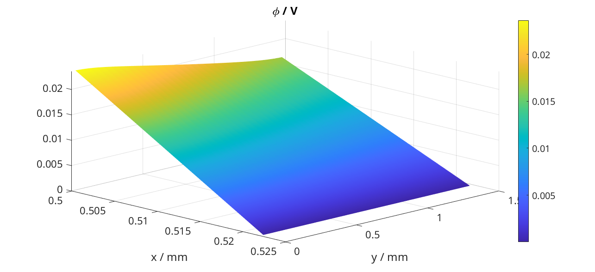
We produce a surface plot of the electromotive potential \(\pi\).
figure
val = state.(elyser).(elyte).pi;
Z = reshape(val, N, []);
surf(X, Y, Z, 'edgecolor', 'none');
title('pi / V')
xlabel('x / mm')
ylabel('y / mm')
view(45, 31)
colorbar
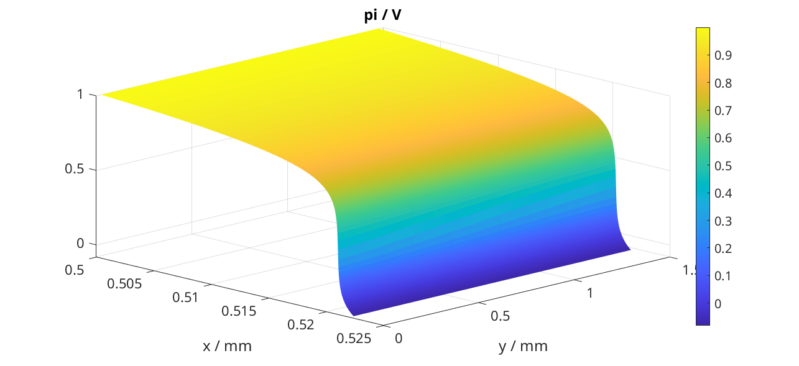
Gas Layer results
We plot the H2O mass fraction in the gas diffusion layer. We observe how the water is being first consumed close to the inlet (inlet is at bottom, outlet at top).
figure
plotCellData(model.(gs).grid, state.(gs).massfractions{1}, 'edgecolor', 'none');
title('H2O mass fraction / -')
colorbar
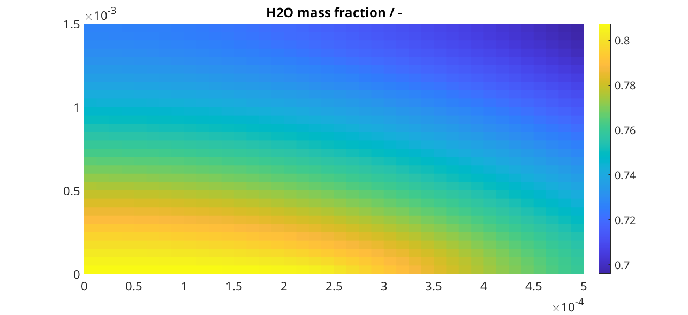
We plot the same result as a surface plot
N = gen.nxGasSupply;
X = reshape(model.(gs).grid.cells.centroids(:, 1), N, [])/(milli*meter);
Y = reshape(model.(gs).grid.cells.centroids(:, 2), N, [])/(milli*meter);
val = state.(gs).massfractions{1};
Z = reshape(val, N, []);
surf(X, Y, Z, 'edgecolor', 'none');
colorbar
title('Mass Fraction H2O');
xlabel('x / mm')
ylabel('y / mm')
view([50, 51]);
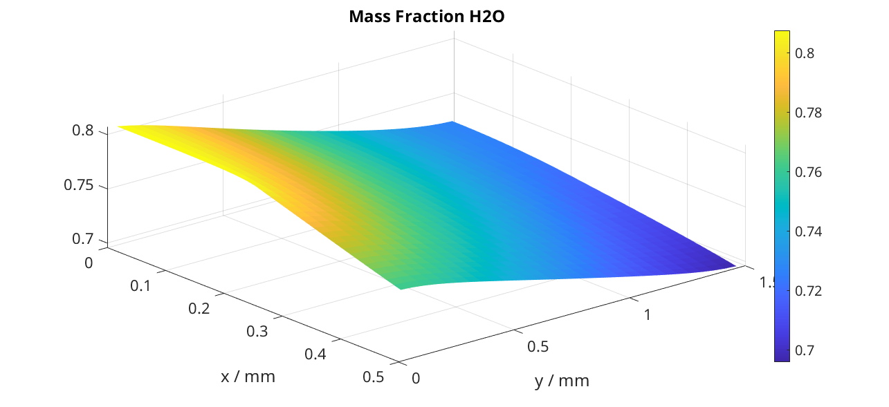
We plot the O2 mass fraction
figure('position', [1290, 755, 1275, 559])
val = state.(gs).massfractions{2};
Z = reshape(val, N, []);
surf(X, Y, Z, 'edgecolor', 'none');
colorbar
title('Mass Fraction O2');
xlabel('x / mm')
ylabel('y / mm')
view([50, 51]);
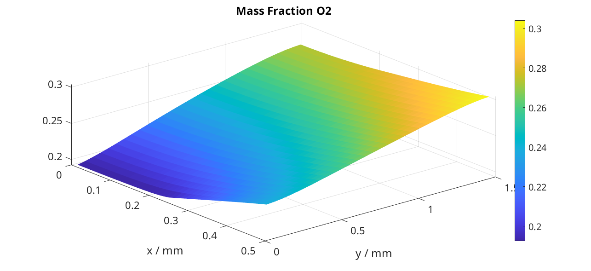
Interface results
Current density in the anode. We recover the current on each face along the anode.
i = state.Electrolyser.Anode.i;
From the current values at each face, we compute the current density by dividing with the face areas.
ind = model.Electrolyser.couplingTerms{1}.couplingfaces(:, 2);
yc = model.Electrolyser.Electrolyte.grid.faces.centroids(ind, 2);
areas = model.Electrolyser.Electrolyte.grid.faces.areas(ind);
u = ampere/((centi*meter)^2);
i = (i./areas)/u; % We convert to A/cm^2
figure
plot(yc/(milli*meter), i);
title('Current in Anode / A/cm^2')
xlabel('height / mm')
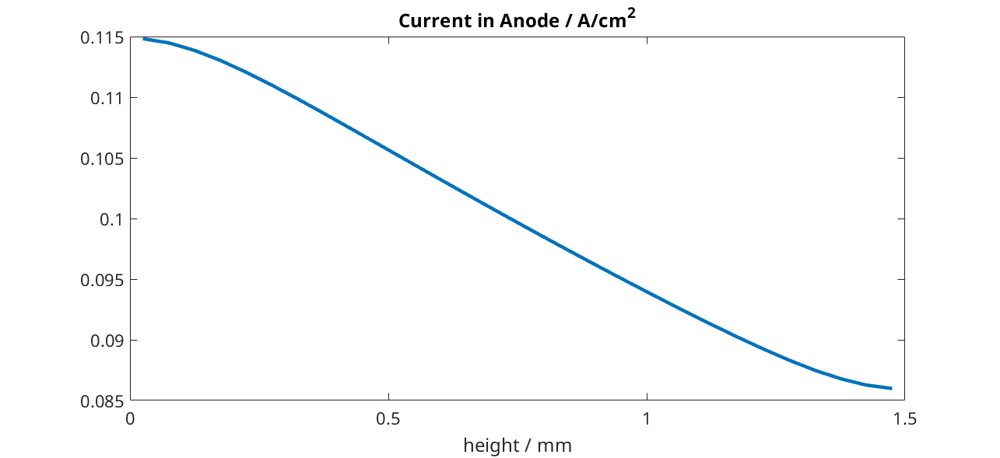
We do the same but now for the proton current.
iHp = state.Electrolyser.Anode.iHp;
ind = model.Electrolyser.couplingTerms{1}.couplingfaces(:, 2);
yc = model.Electrolyser.Electrolyte.grid.faces.centroids(ind, 2);
areas = model.Electrolyser.Electrolyte.grid.faces.areas(ind);
u = ampere/((centi*meter)^2);
iHp = (iHp./areas)/u;
figure
plot(yc/(milli*meter), iHp);
title('iHp in Anode / A/cm^2')
xlabel('height / mm')
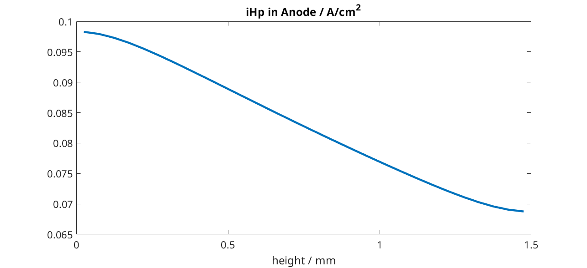
By dividing the proton current density with the total current density, we obtain the Faradic efficiency.
% drivingForces.src = schedule.control.src;
% state = model.evalVarName(state, 'Electrolyser.Anode.iHp', {{'drivingForces', drivingForces}});
i = state.Electrolyser.Anode.i;
iHp = state.Electrolyser.Anode.iHp;
ind = model.Electrolyser.couplingTerms{1}.couplingfaces(:, 2);
yc = model.Electrolyser.Electrolyte.grid.faces.centroids(ind, 2);
figure
plot(yc/(milli*meter), iHp./i);
title('Faradic efficiency')
xlabel('height / mm')
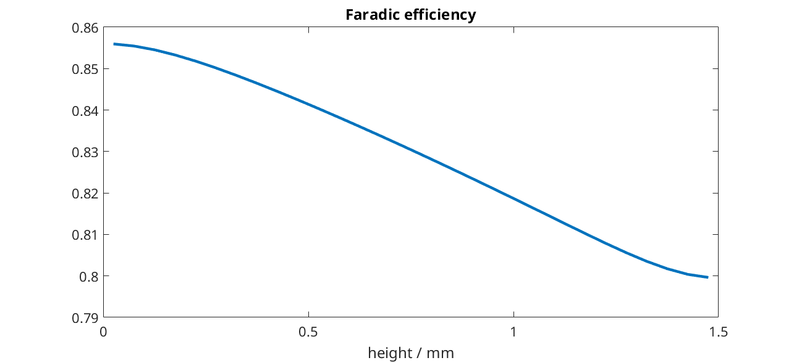
complete source code can be found here